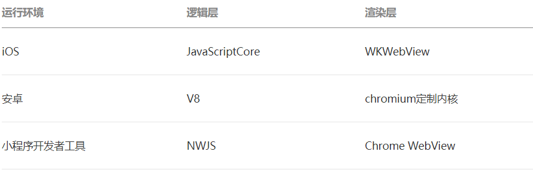

小程序与普通网页开发的区别
网页开发渲染线程和脚本线程是互斥的，这也是为什么长时间的脚本运行可能会导致页面失去响应，而在小程序中，二者是分开的，分别运行在不同的线程中。网页开发者可以使用到各种浏览器暴露出来的 DOM API，进行 DOM 选中和操作。而如上文所述，小程序的逻辑层和渲染层是分开的，逻辑层运行在 JSCore 中，并没有一个完整浏览器对象，因而缺少相关的DOM API和BOM API。这一区别导致了前端开发非常熟悉的一些库，例如 jQuery、 Zepto 等，在小程序中是无法运行的。同时 JSCore 的环境同 NodeJS 环境也是不尽相同，所以一些 NPM 的包在小程序中也是无法运行的。
小程序的运行环境

JSON 配置
JSON扮演的静态配置的角色
小程序配置 app.json
app.json 是当前小程序的全局配置，包括了小程序的所有页面路径、界面表现、网络超时时间、底部 tab 等。
工具配置 project.config.json
project.config.json，你在工具上做的任何配置都会写入到这个文件，当你重新安装工具或者换电脑工作时，你只要载入同一个项目的代码包，开发者工具就自动会帮你恢复到当时你开发项目时的个性化配置，其中会包括编辑器的颜色、代码上传时自动压缩等等一系列选项。
页面配置 page.json
这里的 page.json 其实用来表示 pages/logs 目录下的 logs.json 这类和小程序页面相关的配置。
提供 page.json，让开发者可以独立定义每个页面的一些属性，例如刚刚说的顶部颜色、是否允许下拉刷新等等
JSON 语法
这里说一下小程序里JSON配置的一些注意事项。
JSON文件都是被包裹在一个大括号中 {}，通过key-value的方式来表达数据。JSON的Key必须包裹在一个双引号中，在实践中，编写 JSON 的时候，忘了给 Key 值加双引号或者是把双引号写成单引号是常见错误。
JSON的值只能是以下几种数据格式，其他任何格式都会触发报错，例如 JavaScript 中的 undefined。
- 数字，包含浮点数和整数
- 字符串，需要包裹在双引号中
- Bool值，true 或者 false
- 数组，需要包裹在方括号中 []
- 对象，需要包裹在大括号中 {}
- Null
还需要注意的是 JSON 文件中无法使用注释，试图添加注释将会引发报错
WXML 模板
WXML 充当的就是类似 HTML 的角色
小程序的 WXML 用的标签是 view, button, text 等等，这些标签就是小程序给开发者包装好的基本能力，我们还提供了地图、视频、音频等等组件能力。
MVVM 的开发模式（例如 React, Vue），提倡把渲染和逻辑分离。简单来说就是不要再让 JS 直接操控 DOM，JS 只需要管理状态即可，然后再通过一种模板语法来描述状态和界面结构的关系即可。
1 | 如果你需要把一个 Hello World 的字符串显示在界面上。 |
WXSS 样式
新增了尺寸单位。在写 CSS 样式时，开发者需要考虑到手机设备的屏幕会有不同的宽度和设备像素比，采用一些技巧来换算一些像素单位。WXSS 在底层支持新的尺寸单位 rpx ，开发者可以免去换算的烦恼，只要交给小程序底层来换算即可，由于换算采用的浮点数运算，所以运算结果会和预期结果有一点点偏差。
提供了全局的样式和局部样式。和前边 app.json, page.json 的概念相同，你可以写一个 app.wxss 作为全局样式，会作用于当前小程序的所有页面，局部页面样式 page.wxss 仅对当前页面生效。
此外 WXSS 仅支持部分 CSS 选择器
更多细节
JS 逻辑交互
1 | 一个服务仅仅只有界面展示是不够的，还需要和用户做交互：响应用户的点击、获取用户的位置等等。在小程序里边，我们就通过编写 JS 脚本文件来处理用户的操作。 |
此外你还可以在 JS 中调用小程序提供的丰富的 API，利用这些 API 可以很方便的调起微信提供的能力，例如获取用户信息、本地存储、微信支付等。
小程序宿主环境
微信客户端给小程序所提供的环境为宿主环境
渲染层和逻辑层
小程序的运行环境分成渲染层和逻辑层，其中 WXML 模板和 WXSS 样式工作在渲染层，JS 脚本工作在逻辑层。
小程序的渲染层和逻辑层分别由2个线程管理：渲染层的界面使用了WebView 进行渲染；逻辑层采用JsCore线程运行JS脚本。一个小程序存在多个界面，所以渲染层存在多个WebView线程，这两个线程的通信会经由微信客户端（下文中也会采用Native来代指微信客户端）做中转，逻辑层发送网络请求也经由Native转发，小程序的通信模型下图所示。

程序与页面
微信客户端在打开小程序之前，会把整个小程序的代码包下载到本地。
紧接着通过 app.json 的 pages 字段就可以知道你当前小程序的所有页面路径:1
2
3
4
5
6{
"pages":[
"pages/index/index",
"pages/logs/logs"
]
}
这个配置说明在 QuickStart 项目定义了两个页面，分别位于 pages/index/index 和 pages/logs/logs。而写在 pages 字段的第一个页面就是这个小程序的首页（打开小程序看到的第一个页面）。
于是微信客户端就把首页的代码装载进来，通过小程序底层的一些机制，就可以渲染出这个首页。
小程序启动之后，在 app.js 定义的 App 实例的 onLaunch 回调会被执行:
1 | App({ |
整个小程序只有一个 App 实例，是全部页面共享的
接下来我们简单看看小程序的一个页面是怎么写的。
你可以观察到 pages/logs/logs 下其实是包括了4种文件的，微信客户端会先根据 logs.json 配置生成一个界面，顶部的颜色和文字你都可以在这个 json 文件里边定义好。紧接着客户端就会装载这个页面的 WXML 结构和 WXSS 样式。最后客户端会装载 logs.js，你可以看到 logs.js 的大体内容就是:
1 | Page({ |
Page 是一个页面构造器，这个构造器就生成了一个页面。在生成页面的时候，小程序框架会把 data 数据和 index.wxml 一起渲染出最终的结构，于是就得到了你看到的小程序的样子。
在渲染完界面之后，页面实例就会收到一个 onLoad 的回调，你可以在这个回调处理你的逻辑。
组件
小程序提供了丰富的基础组件给开发者，开发者可以像搭积木一样，组合各种组件拼合成自己的小程序。
就像 HTML 的 div, p 等标签一样，在小程序里边，你只需要在 WXML 写上对应的组件标签名字就可以把该组件显示在界面上，例如，你需要在界面上显示地图，你只需要这样写即可：
<map></map>
使用组件的时候，还可以通过属性传递值给组件，让组件可以以不同的状态去展现，例如，我们希望地图一开始的中心的经纬度是广州，那么你需要声明地图的 longitude（中心经度） 和 latitude（中心纬度）两个属性:
<map longitude="广州经度" latitude="广州纬度"></map>
组件的内部行为也会通过事件的形式让开发者可以感知，例如用户点击了地图上的某个标记，你可以在 js 编写 markertap 函数来处理：
<map bindmarkertap="markertap" longitude="广州经度" latitude="广州纬度"></map>
当然你也可以通过 style 或者 class 来控制组件的外层样式，以便适应你的界面宽度高度等等
API
为了让开发者可以很方便的调起微信提供的能力，例如获取用户信息、微信支付等等，小程序提供了很多 API 给开发者去使用。
要获取用户的地理位置时，只需要：1
2
3
4
5
6
7wx.getLocation({
type: 'wgs84',
success: (res) => {
var latitude = res.latitude // 纬度
var longitude = res.longitude // 经度
}
})
调用微信扫一扫能力，只需要：1
2
3
4
5wx.scanCode({
success: (res) => {
console.log(res)
}
})
需要注意的是：多数 API 的回调都是异步，你需要处理好代码逻辑的异步问题。